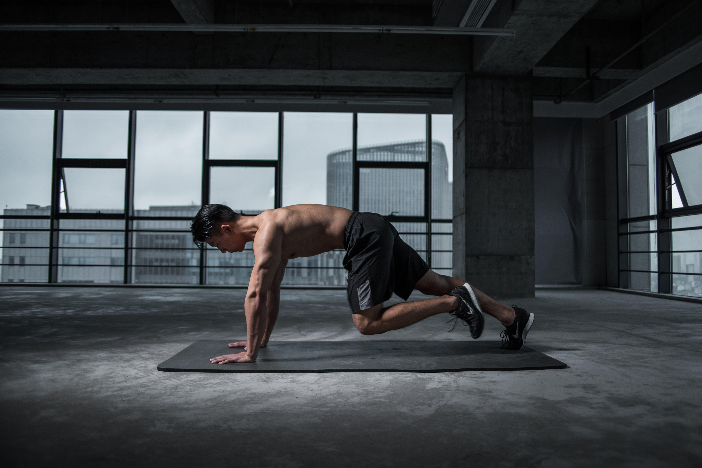

Physical fitness
Embracing fitness

Welcome to our page where we take on the journey towards a healthier and active lifestyle. Physical fitness is not just about exercise it’s about making the right choices, developing good diets, and practicing flexibility. There are lots of things to do in physical fitness then weight lifting or bodybuilding or marathons.
you can find and enjoy activities like trekking, yoga, dancing, sports, and any other activity that keeps you moving and staying active.
Tips for a good fitness regimen
Various workouts


there are various proven workout routines to perform and hit different muscles.
Mixing all cardio, strength training, and flexibility exercises for a well-managed routine will be good.
Nutrition guide
by now you must have learned balanced diet is equally crucial for a healthy body and it also helps in your fitness goals.
Your right choice of nutritious meal plans and tips for enhancing your body all day.
Rest and recovery
For having a healthy body rest is equally important as a healthy meal.
It’s the time when your nutritious meal breaks down into minerals and vitamins needed for your body and helps in running our health system efficiently. All the healing and restoring energy happens in the resting period while you are sleeping.
So 7-9 hours of sleep is very important for an average person’s well-being.
Setting Goals and Tracking Progress
Goal setting:
ensuring you have a realistic fitness goal helps you and motivates you to improve.
Having a goal is always a challenge that keeps you focused whether it’s for improving your strength or improving endurance.
Progress tracking
Using today’s technology to track the record of your progress will help you boost your motivation and help you see what changes you need to apply to meet your needs.
Community and support
Fitness community
today with the help of the internet and the growing social-media craze you can easily access like-minded individuals through groups
and forums, share your experiences, build a network, and encourage and keep a supportive network that keeps you motivated.
Expert advice
access to various articles, guides, and expert advice through social media or YouTube for free on various topics of fitness
which includes techniques on lifting how to avoid an injury, and how to get motivational levels up.
Homepage
About
Diets
Mental Health
Physical Fitness
Want to play a game?
contact?